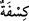

da bulutu kaldırır.” Tâcü’l-mesâdır’da der ki: “
” Toz kaldırmak, yeryüzünü
harekete geçirmek ve rüzgârın bulut getirmesidir. “
(bulut)” kelimesi cins ismidir.
Bir tek buluta da, daha fazlasına da söylenmesi de sahihtir. el-Müfredât’ta der ki: “
” kelimesinin asıl anlamı çekmektir. “
(bulut)” kelimesi de rüzgarın
kendisini çekip sürüklediğinden ya da kendisi suyu çektiğinden dolayı bu kökten
gelmektedir.
Yâni bu rüzgârlar bulutu yayar, kaldırır ve yerlerinden çıkarır. Rüzgârlar bulutu
hareket ettirir, savurur. Bulutu kaldıran Allah Teâlâ olduğu halde rüzgârlara izâfe
edilmesi, rüzgarların kaldırmanın sebebi oldukları içindir. Fiil fâiline nisbet edildiği
gibi bâzen sebebine de nisbet edilir.
“Derken, Allah onu gökte” gök tarafında bir günlük, iki günlük, daha az veya çok
günlük mesafede hareket ederek veya durarak, güney veya kuzey yönünden, batı rüzgarı
veya saba rüzgarı olarak ve diğer yönlerden estiği halde “dilediği gibi” yâni bazen
bitişik olarak “yayar ve” bazen de her bir tarafa bir parça göndererek “parça parça
eder;”
“
” kelimesi, bulut, pamuk ve benzeri seyrek cisimlerin parçası demek olan “
”
kelimesinin çoğuludur. Nitekim el-Müfredât’ta böyle geçmektedir.
Ey Muhammed veya görme kabiliyeti olan herkes, “nihâyet” bulutun “arasından” ve
boşluklarından; bulutun bitişik ve parça parça olduğu zamanlardaki her iki durumda da
“yağmurun” ilâhî emirle “çıktığını görürsün.”
Râğıb der ki: “
” evin ve bulutun aralığı gibi iki şey arasındaki açıklık demektir.
Çoğulu “
”dir.”
Bulutların elek gibi olduğu, eğer böyle olmasa yağmurun yeryüzünü bozacağı
söylenmiştir.
Vehb b. Münebbih’den rivâyet edildiğine göre o, şöyle demiştir: “Yeryüzü tufan
günlerinde Allah Teâlâ’ya şikâyette bulundu. Çünkü Allah Teâlâ ölçüsüz ve tartısız
miktarda su gönderdi. Allah Teâlâ’nın gadabından dolayı su fışkırdı ve yeryüzünü yarık
yarık yardı. Yeryüzü: “Yâ Rabbi! Su beni yarıp tırmaladı.” dedi. -En doğrusunu Allah
bilir ama bana ulaştığına göre- Allah Teâlâ: “Su için bir elek yaratacağım, seni
yarmayacak ve tırmalamayacak.” buyurdu ve bulutları yağmurun eleği kıldı.
“Allah dilediği kullarına yağmuru nasip edince,” Sonra Hak Teâlâ bölge ve şehirlere
yağmuru gönderince, kullarından kimi dilerse, o zaman “onlar seviniverirler.” Mutlu ve
mesrur olurlar. Yâni bolluğun gelmesi ve kıtlığın kalkmasından dolayı hemen sevince
kapılırlar.